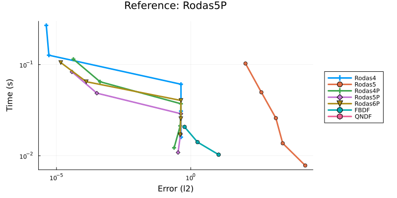
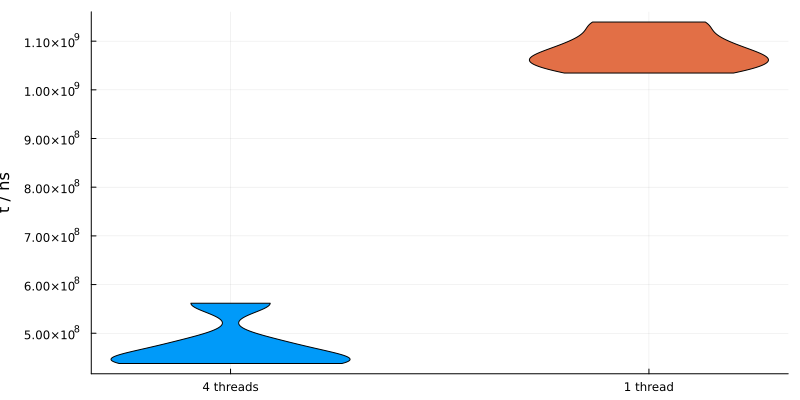
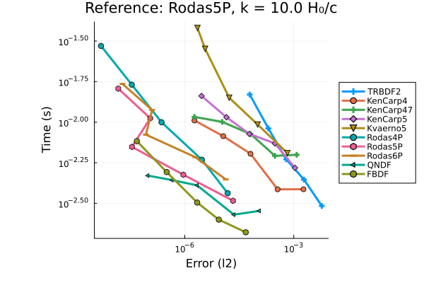
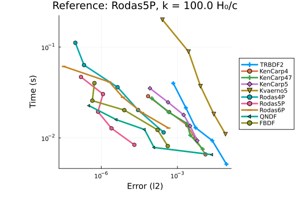
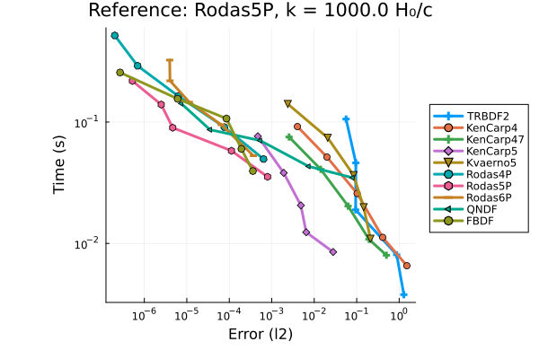
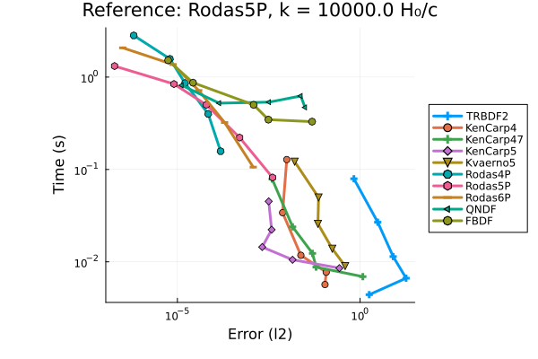
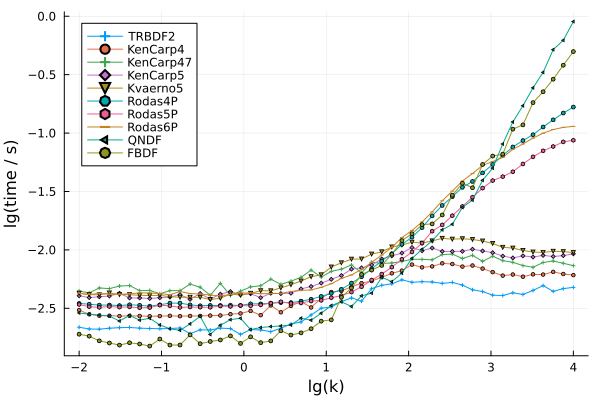
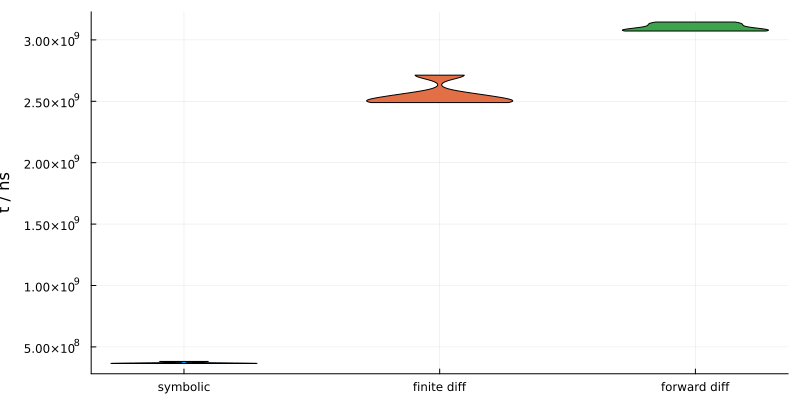
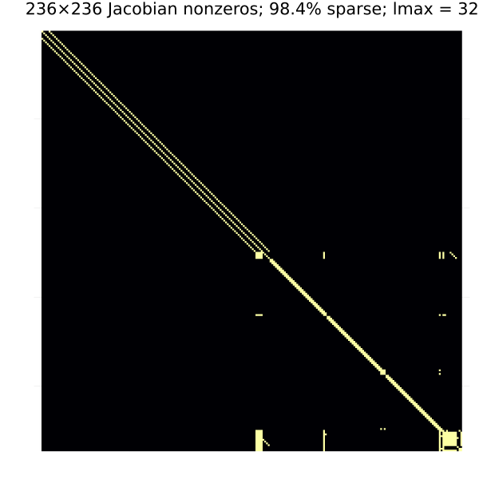
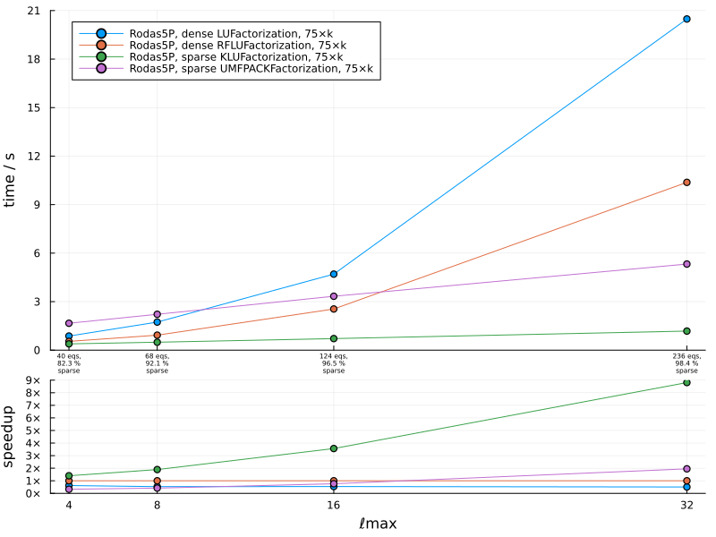

Performance and benchmarks
Model setup and hardware information:
using MKL, LinearSolve
using SymBoltz
using OrdinaryDiffEqRosenbrock, OrdinaryDiffEqSDIRK, OrdinaryDiffEqBDF
using Base.Threads, BenchmarkTools, Plots, BenchmarkPlots, StatsPlots
M = ΛCDM()
pars = parameters_Planck18(M)
prob = CosmologyProblem(M, pars; jac = true, sparse = true)
using Dates, InteractiveUtils, LinearAlgebra
LinearAlgebra.BLAS.set_num_threads(1)
println("Current time: ", now(), "\n")
println(sprint(InteractiveUtils.versioninfo)) # show computer information
println(LinearAlgebra.BLAS.get_config())
println("BLAS threads: ", LinearAlgebra.BLAS.get_num_threads())Current time: 2026-04-20T14:32:25.946
Julia Version 1.12.6
Commit 15346901f00 (2026-04-09 19:20 UTC)
Build Info:
Official https://julialang.org release
Platform Info:
OS: Linux (x86_64-linux-gnu)
CPU: 4 × AMD EPYC 7763 64-Core Processor
WORD_SIZE: 64
LLVM: libLLVM-18.1.7 (ORCJIT, znver3)
GC: Built with stock GC
Threads: 4 default, 1 interactive, 4 GC (on 4 virtual cores)
Environment:
JULIA_DEBUG = Documenter
LBTConfig([ILP64] libmkl_rt.so, [LP64] libmkl_rt.so)
BLAS threads: 1Background: precision-work diagram
This plot compares the time to solve the background vs. accuracy of the solution using different ODE solvers and tolerances. Every solution is compared to a reference solution with very small tolerance. The points on each curve correspond to a sequence of tolerances.
using DiffEqDevTools
refalg = Rodas5P(linsolve = RFLUFactorization())
bgsol = solve(prob.bg, refalg; abstol = 1e-12, reltol = 1e-12) # reference solution (results are similar compared to Rodas4/4P/5P/FBDF)
abstols = 1 ./ 10 .^ (7:11)
reltols = 1 ./ 10 .^ (7:11)
bgalgs = [Rodas4(), Rodas5(), Rodas4P(), Rodas5P(), Rodas6P(), FBDF(), QNDF()] # FBDF/QNDF unstable for some tolerances
setups = [Dict(:alg => alg) for alg in bgalgs]
wp = WorkPrecisionSet(prob.bg, abstols, reltols, setups; appxsol = bgsol, save_everystep = false, error_estimate = :l2)
plot(wp; title = "Reference: $(SymBoltz.algname(refalg))", size = (800, 400), margin = 5*Plots.mm)
Note that the FBDF and QNDF methods are unstable for several tolerances.
Perturbations: parallelization
SymBoltz parallelizes integration of different perturbation $k$-modes with multithreading by default. Make sure you run Julia with multiple threads. This is a standard technique in Boltzmann solvers, as linear perturbation modes are mathematically independent. It leads to a performance improvement depending on the number of threads available. It can be disabled, for example if your application permits parallelization at a higher level.
bench = BenchmarkGroup()
ks = 10 .^ range(-1, 4, length = 50)
for thread in [true, false]
label = thread ? "$(nthreads()) threads" : "1 thread"
bench[label] = @benchmarkable $solve($prob, $ks; thread = $thread) samples=5 seconds=30
end
results = run(bench; verbose = true)
plot(results; size = (800, 400))
Perturbations: precision-work diagram
This plot compares the time to solve a perturbation $k$-mode vs. accuracy of the solution using different ODE solvers and tolerances. Each subplot corresponds to a different $k$-mode. Every solution is compared to a reference solution with very small tolerance. The points on each curve correspond to a sequence of tolerances.
ptalgs = [algtype(linsolve = KLUFactorization()) for algtype in [TRBDF2, KenCarp4, KenCarp47, KenCarp5, Kvaerno5, Rodas4P, Rodas5P, Rodas6P, QNDF, FBDF]]
ptprobgen = SymBoltz.setuppt(prob.pt, bgsol)
setups = [Dict(:alg => alg) for alg in ptalgs]
refalg = Rodas5P(linsolve = KLUFactorization())
abstols = 1 ./ 10 .^ (5:9)
reltols = 1 ./ 10 .^ (5:9)
function plot_precision_work_perturbations(k; numruns = 8, print_names = true, kwargs...)
ptprob = ptprobgen(k)
ptsol = solve(ptprob, refalg; reltol = 1e-12, abstol = 1e-12) # reference solution (results are similar compared to QNDF/FBDF/Rodas4/4P/5P/, somewhat different with KenCarp4/Kvaerno5; use standard Rodas5P which is also used in CLASS comparison)
wp = WorkPrecisionSet(ptprob, abstols, reltols, setups; appxsol = ptsol, save_everystep = false, error_estimate = :l2, numruns, print_names, kwargs...)
return plot(wp; title = "Reference: $(SymBoltz.algname(refalg)), k = $k H₀/c", left_margin = 15*Plots.mm, bottom_margin = 5*Plots.mm)
end
pk1 = plot_precision_work_perturbations(1e1)
pk2 = plot_precision_work_perturbations(1e2)
pk3 = plot_precision_work_perturbations(1e3)
pk4 = plot_precision_work_perturbations(1e4)
Perturbations: time per mode
This plot shows the time spent solving individual perturbation $k$-modes using different ODE solvers with fixed tolerance.
solvemode(k, ptalg) = solve(ptprobgen(k); alg = ptalg, reltol = 1e-5, abstol = 1e-5)
ks = 10 .^ range(-2, 4, length = 50)
times = [[minimum(@elapsed solvemode(k, ptalg) for i in 1:3) for k in ks] for ptalg in ptalgs]
plot(
log10.(ks), map(ts -> log10.(ts), times); marker = :auto, markersize = 2,
xlabel = "lg(k)", ylabel = "lg(time / s)", xticks = range(log10(ks[begin]), log10(ks[end]), step=1),
label = permutedims(SymBoltz.algname.(ptalgs)), legend_position = :topleft
)
Perturbations: timesteps
ks = [1e0, 1e1, 1e2, 1e3]
p = plot(xlabel = "τ", ylabel = "Δτ", layout = (2, 2), size = (800, 200*length(ks)), legend_position = :topleft)
for (i, k) in enumerate(ks)
for ptalg in ptalgs
ptprob = ptprobgen(k)
ptsol = solvept(ptprob; alg = ptalg, reltol = 1e-5, abstol = 1e-5)
τs = ptsol.t
Δτs = diff(τs)
τs = ptsol.t[begin:end-1] # remove last time to match size of Δτs
plot!(p, τs, Δτs; marker = :auto, markerstrokewidth = 0, markersize = 2, label = SymBoltz.algname(ptalg), title = "k = $k H₀/c",subplot = i)
end
end
p
Perturbations: Jacobian method
The Jacobian of the perturbation ODEs can be computed in three ways:
- explicitly from a symbolically generated function,
- numerically using forward-mode dual numbers, or
- numerically using finite differences.
This plot shows the time to solve several perturbation $k$-modes for each such method. In all cases, the Jacobian is made sparse from the analytical sparsity pattern.
bench = BenchmarkGroup()
ks = 10 .^ range(-2, 4, length = 50)
prob_jac = prob # CosmologyProblem(M, pars; jac = true, sparse = true)
prob_nojac = CosmologyProblem(M, pars; jac = false, sparse = true)
bgopts = (alg = Rodas5P(linsolve = RFLUFactorization(),),)
ptopts = (alg = Rodas5P(linsolve = KLUFactorization(),), save_everystep = false) # generate function for J symbolically
bench["symbolic"] = @benchmarkable $solve($prob_jac, $ks; bgopts = $bgopts, ptopts = $ptopts) samples=5 seconds=30
bgopts = (alg = Rodas5P(linsolve = RFLUFactorization(), autodiff = true),)
ptopts = (alg = Rodas5P(linsolve = KLUFactorization(), autodiff = true), save_everystep = false) # compute J with forward-mode AD
bench["forward diff"] = @benchmarkable $solve($prob_nojac, $ks; bgopts = $bgopts, ptopts = $ptopts) samples=5 seconds=30
bgopts = (alg = Rodas5P(linsolve = RFLUFactorization(), autodiff = true),) # fails with finite diff background J
ptopts = (alg = Rodas5P(linsolve = KLUFactorization(), autodiff = false), save_everystep = false) # compute J with finite differences
bench["finite diff"] = @benchmarkable $solve($prob_nojac, $ks; bgopts = $bgopts, ptopts = $ptopts) samples=5 seconds=30
results = run(bench; verbose = true)
plot(results; size = (800, 400))
Perturbations: linear system solver
At every time step, the implicit perturbation ODE solver solves a system of (nonlinear) equations with Newton's method. In turn, Newton's method involves iteratively solving several linear systems $Ax = b$, where $A$ involves the ODE Jacobian matrix $J$. This can be a bottleneck, so it is very important to use a linear solver that does this as fast as possible!
Note that the optimal linear solver depends on both the model and your hardware. See this tutorial on accelerating linear solves. Also run Julia with the optimal BLAS backend for your platform, such as MKL.jl for Intel or AppleAccelerate.jl for Macs, instead of Julia's default OpenBLAS backend.
In particular, for large models the ODE Jacobian can have lots of zeros. Here is an example for a model with many perturbation equations.
lmaxs = [4, 8, 16, 32]
Ms = [ΛCDM(; lmax) for lmax in lmaxs]
probs_dense = [CosmologyProblem(M, pars; ptopts = (jac = true, sparse = false)) for M in Ms]
probs_sparse = [CosmologyProblem(M, pars; ptopts = (jac = true, sparse = true)) for M in Ms]
# example of sparse Jacobian
J = copy(probs_sparse[end].pt.f.jac_prototype)
J.nzval .= 1
N = first(size(J))
heatmap(J; yflip = true, title = "$N×$N Jacobian nonzeros; $(round(SymBoltz.sparsity_fraction(J)*100, digits=1))% sparse; lmax = $(lmaxs[end])", axis = false, colorbar = false, aspect_ratio = 1, size = (600, 600))
Sparse matrix methods are therefore very important to speed up the solution of large perturbation systems. This plot compares the time to solve several perturbation $k$-modes with different dense and sparse linear matrix solvers.
ks = 10 .^ range(-2, 4, length=75)
ptopts1 = (alg = Rodas5P(linsolve = LUFactorization()), save_everystep = false)
ptopts2 = (alg = Rodas5P(linsolve = RFLUFactorization()), save_everystep = false)
ptopts3 = (alg = Rodas5P(linsolve = KLUFactorization()), save_everystep = false)
ptopts4 = (alg = Rodas5P(linsolve = UMFPACKFactorization()), save_everystep = false)
ts1 = [minimum(@elapsed solve(prob, ks; ptopts = ptopts1, verbose = true) for i in 1:3) for prob in probs_dense]
ts2 = [minimum(@elapsed solve(prob, ks; ptopts = ptopts2, verbose = true) for i in 1:3) for prob in probs_dense]
ts3 = [minimum(@elapsed solve(prob, ks; ptopts = ptopts3, verbose = true) for i in 1:3) for prob in probs_sparse]
ts4 = [minimum(@elapsed solve(prob, ks; ptopts = ptopts4, verbose = true) for i in 1:3) for prob in probs_sparse]
p1 = plot(ylabel = "time / s", xticks = (lmaxs, ""), ylims = (0.0, ceil(max(maximum(ts1), maximum(ts2), maximum(ts3), maximum(ts4)))))
marker = :circle
plot!(p1, lmaxs, ts1; label = "$(SymBoltz.algname(ptopts1.alg)), dense $(nameof(typeof(ptopts1.alg.linsolve))), $(length(ks))×k", marker)
plot!(p1, lmaxs, ts2; label = "$(SymBoltz.algname(ptopts2.alg)), dense $(nameof(typeof(ptopts2.alg.linsolve))), $(length(ks))×k", marker)
plot!(p1, lmaxs, ts3; label = "$(SymBoltz.algname(ptopts3.alg)), sparse $(nameof(typeof(ptopts3.alg.linsolve))), $(length(ks))×k", marker)
plot!(p1, lmaxs, ts4; label = "$(SymBoltz.algname(ptopts4.alg)), sparse $(nameof(typeof(ptopts4.alg.linsolve))), $(length(ks))×k", marker)
text(prob::CosmologyProblem) = "$(length(prob.pt.u0)) eqs,\n$(round(SymBoltz.sparsity_fraction(prob.pt)*100, digits=1)) %\nsparse"
annotate!(p1, lmaxs, zeros(length(lmaxs)), [(text(prob), 5, :top) for prob in probs_sparse])
speedups1 = [ts2[i]/ts1[i] for i in eachindex(lmaxs)]
speedups2 = [ts2[i]/ts2[i] for i in eachindex(lmaxs)]
speedups3 = [ts2[i]/ts3[i] for i in eachindex(lmaxs)]
speedups4 = [ts2[i]/ts4[i] for i in eachindex(lmaxs)]
ymax = Int(ceil(maximum(maximum.([speedups1, speedups2, speedups3, speedups4]))))
ylims = (0, ymax)
yticks = 0:1:ymax
yticks = (collect(yticks), collect("$y×" for y in yticks))
p2 = plot(; xlabel = "ℓmax", ylabel = "speedup", xticks = lmaxs, yticks, ylims, marker)
plot!(p2, lmaxs, speedups1; marker, label = nothing)
plot!(p2, lmaxs, speedups2; marker, label = nothing)
plot!(p2, lmaxs, speedups3; marker, label = nothing)
plot!(p2, lmaxs, speedups4; marker, label = nothing)
plot(p1, p2; size = (800, 600), layout = grid(2, 1, heights=(3//4, 1//4)))
Except for models with a very small perturbation system, it is a good idea to generate the sparse Jacobian and use the sparse KLUFactorization linear solver.